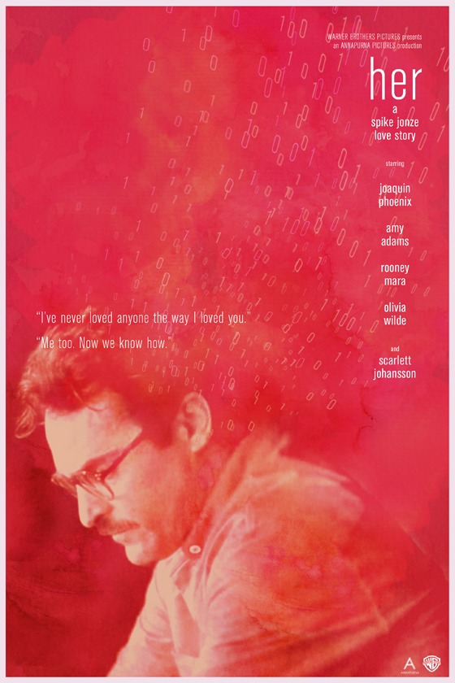
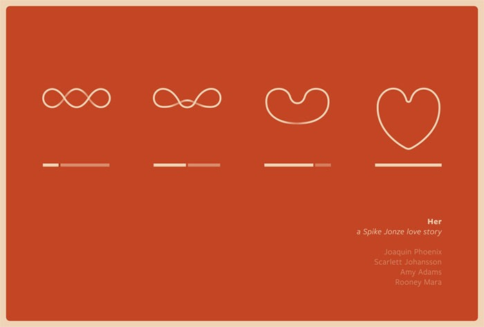
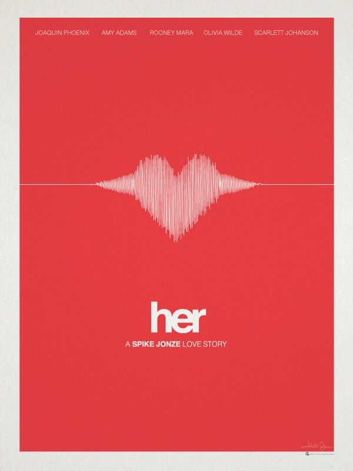
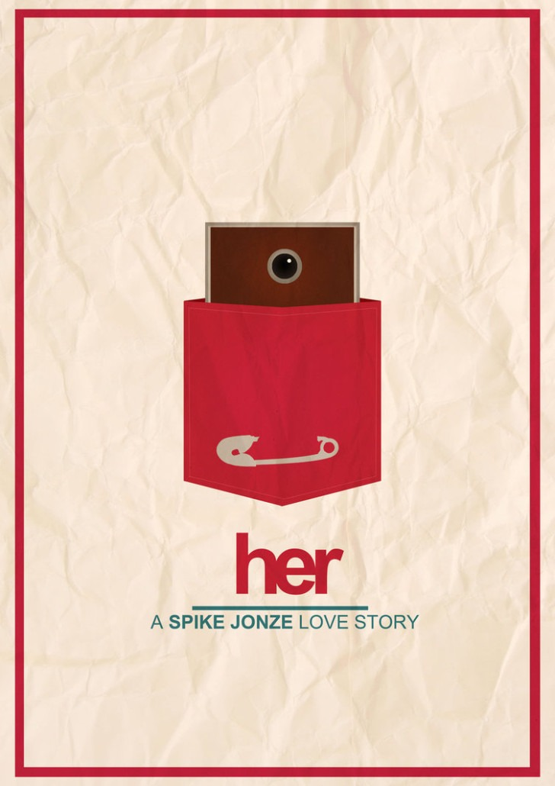

Футуро-ретро 70х, прекрасный город (Лос-Анджелес и Шанхай), геометрическая мебель, мониторы с деревянными корпусами, телефоны-портсигары-визитницы, усы и одежда из 70-ых.
Прекрасная и грустная история нашего недалекого будущего, когда жизнь будет в телефоне или планшете. А люди? Это антураж, просто сделайте музыку погромче.
Или это история недалекого прошлого? Кто не переставал дышать на секунду, слыша ночное «Привет…» в трубке? Кому не сбрасывал сволочной оператор после получаса разговоров? У кого не стучало сердце, когда тот самый контакт появлялся онлайн? Кто не чатился в аське ночи напролет? Кто не занимался любовью по телефону? Кто не плакал ночами, потому что пришла пора расставаться?
Если вы были молоды и влюблены — посмотрите фильм.